Featured Research Projects
Prime and Reach: Synthesising Body Motion for Gaze-Primed Object Reach
Preprint
A dataset and framework for modeling the prime and reach human ability for realistic human motion synthesis.

3D-Aware Multi-Task Learning with Cross-View Correlations for Dense Scene Understanding
CVPR 2026
A framework for integrating correlations across views, i.e., cost volume, as geometric consistency in the MTL network.
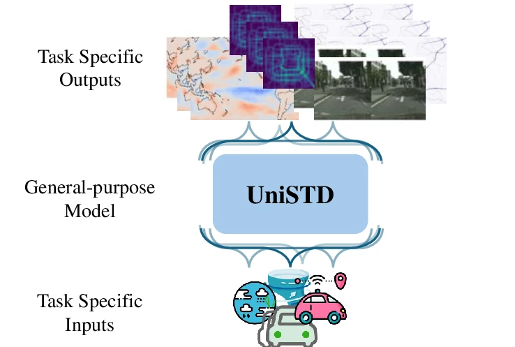
UniSTD: Towards Unified Spatio-Temporal Prediction across Diverse Disciplines
CVPR 2025
A framework for learning universal representations through a single network over multiple spatio-temporal tasks across diverse disciplines.
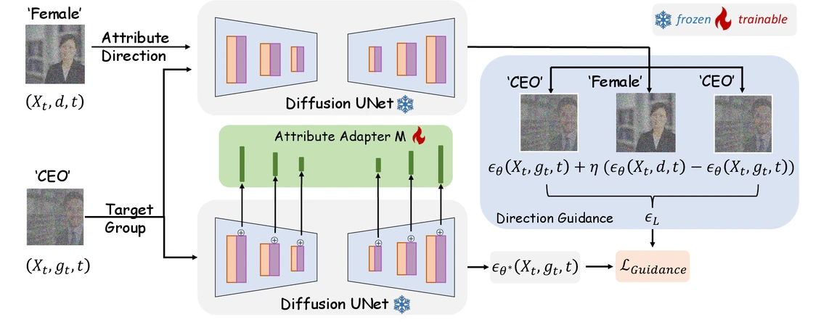
FairGen: Enhancing Fairness in Text-to-Image Diffusion Models via Self-Discovering Latent Directions
ICCV 2025
A framework for debiasing stable diffusion models by learning attribute-specific adapters and noise compositing.
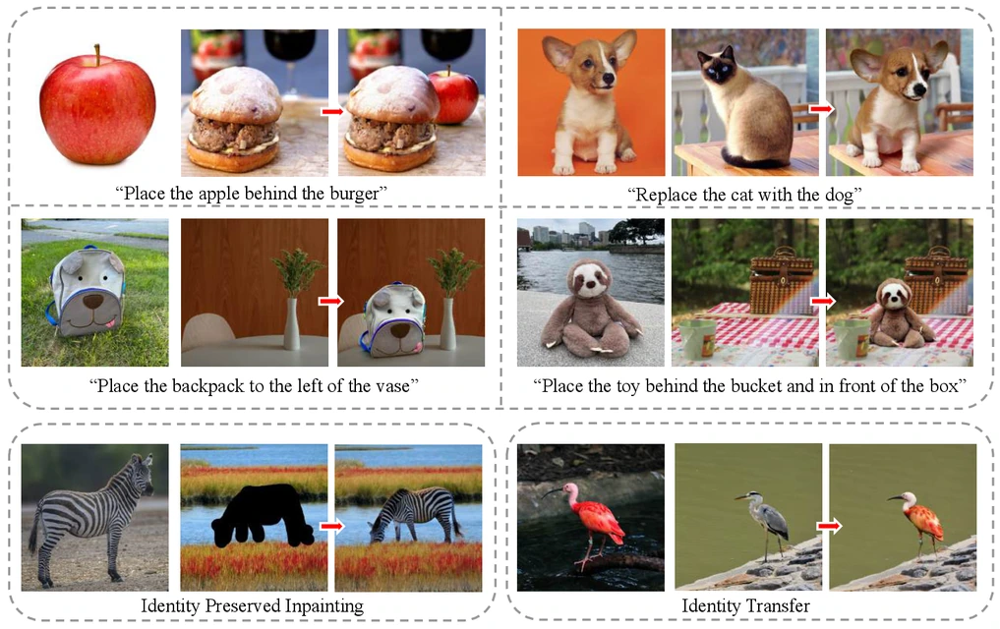
Bifröst: 3D-Aware Image compositing with Language Instructions
NeurIPS 2024
A framework for enabling 3D-aware image compositing.
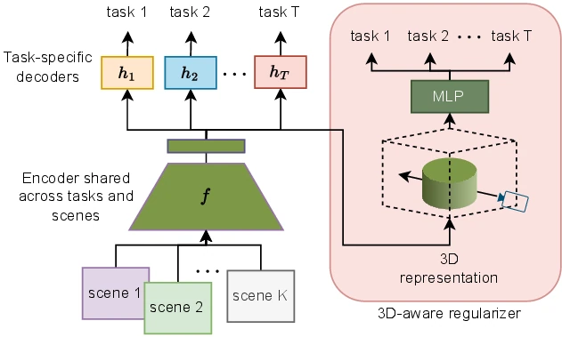
Multi-task Learning with 3D-Aware Regularization
ICLR 2024
A framework for learning structured representations that valid for multiple dense prediction tasks by a 3D-aware regularizer via neural rendering.
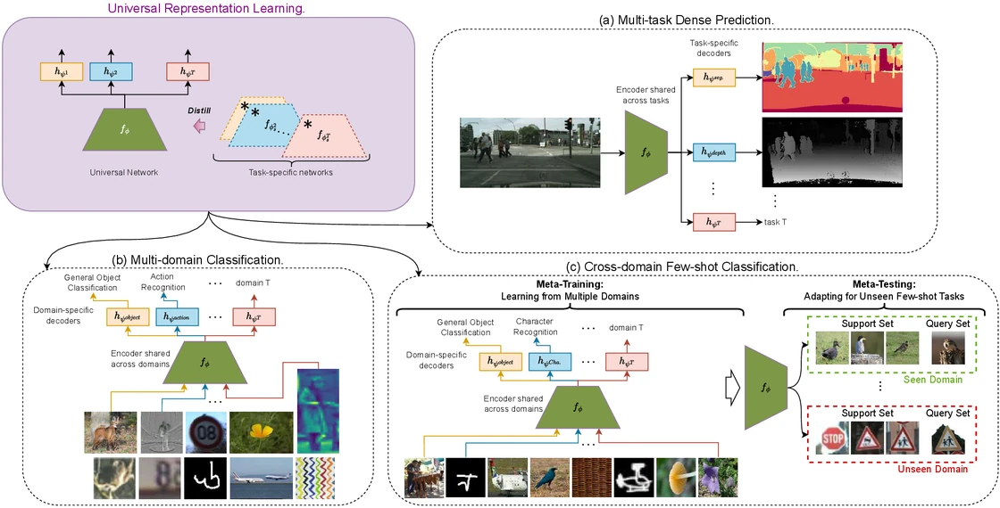
Universal Representations: A Unified Look at Multiple Task and Domain Learning
IJCV 2023
A framework for learning a single universal neural network that effectively works across multiple tasks and domains.

Learning Multiple Dense Prediction Tasks from Partially Annotated Data
CVPR 2022 (Oral, Best Paper Nominee)
A framework for learning multiple dense prediction tasks when only partial annotations are available for each task.

Cross-domain Few-shot Learning with Task-specific Adapters
CVPR 2022
Task-specific adapters enable effective few-shot learning across different domains with minimal parameter updates.
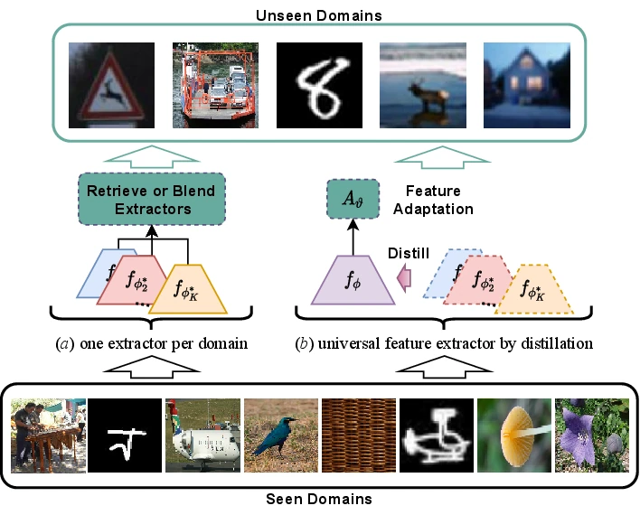
Universal Representation Learning from Multiple Domains for Few-shot Classification
ICCV 2021
Learning universal feature representations that generalize across multiple domains for few-shot classification tasks.
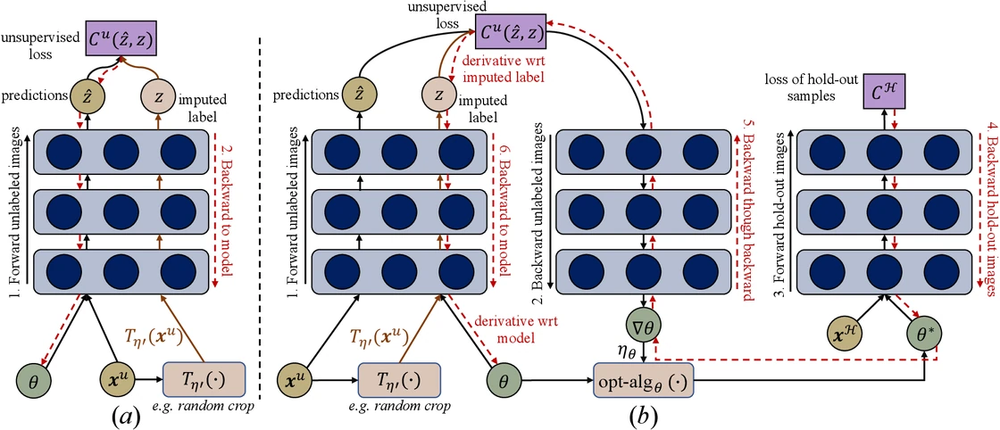
Learning to Impute: A General Framework for Semi-supervised Learning
Preprint 2019
A general framework that learns to impute missing features for semi-supervised learning scenarios.
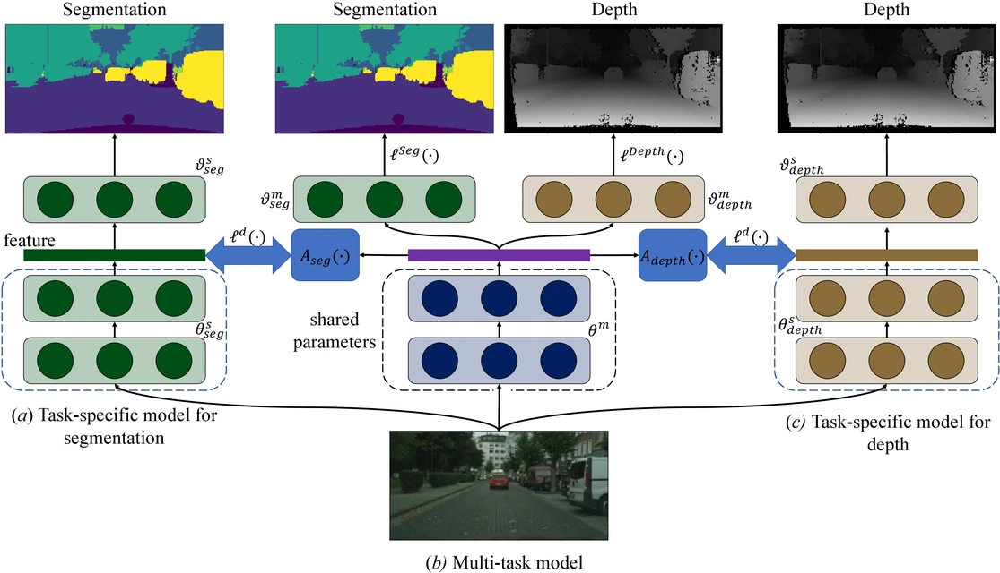
Knowledge Distillation for Multi-task Learning
ECCV Workshop 2020
Applying knowledge distillation techniques to improve multi-task learning performance and efficiency.
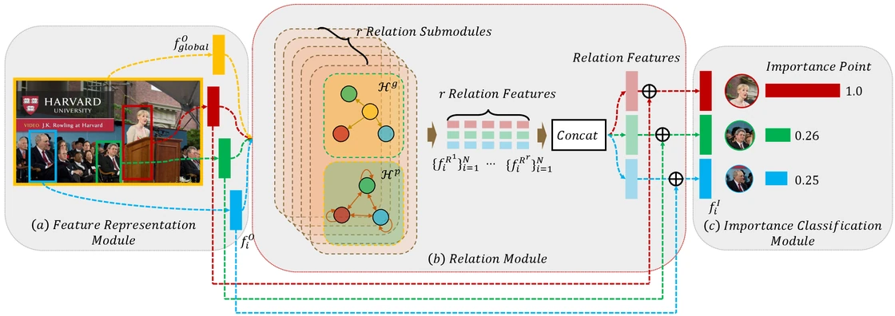
Learning to Learn Relation for Important People Detection in Still Images
CVPR 2019
Meta-learning approach for detecting important people in images by learning relational patterns.
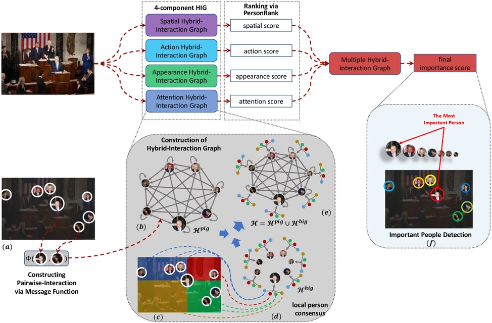
PersonRank: Detecting Important People in Images
FG 2018 (Oral)
A ranking-based approach for automatically identifying the most important people in group photos.
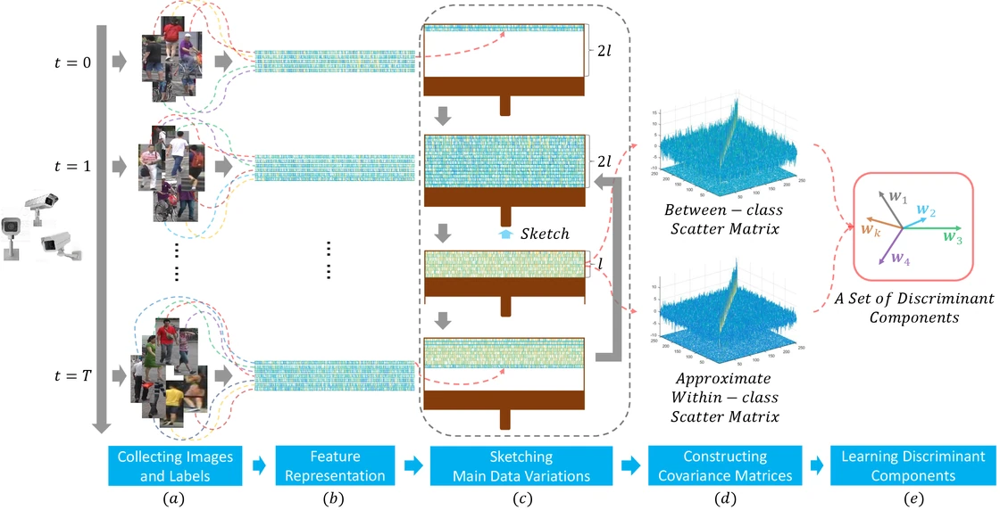
One-pass Person Re-identification by Sketched Online Discriminant Analysis
PR 2019
Efficient online person re-identification using sketched discriminant analysis for real-time applications.